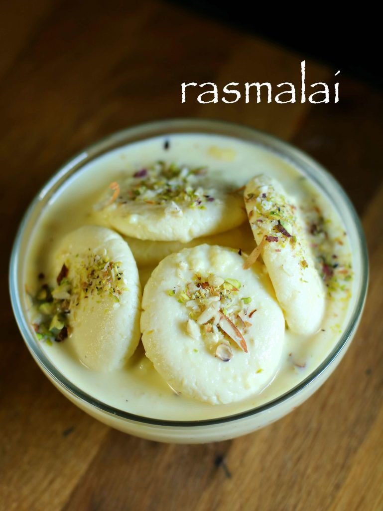

Rasmalai
Ingredients
- 1 litre milk, full cream cows milk
- 2 tbsp lemon juice
- 1 cup water
- 1 cup sugar
- 1 litre milk, full cream cows / buffalo milk
- 1 cup sugar
- 1 tsp cardamom powder
- 7 pistachios, chopped
- 5 almonds, chopped
- 10 cashews, chopped
Method:
- Firstly, boil milk.
- Additionally, add lemon juice and stir till milk curdles completely.
- Drain the curdled milk and squeeze off excess water.
- After 30 minutes, start to knead the paneer for 10 minutes.
- Furthermore, make small balls and flatten. Keep aside.
- Firstly, take sugar and water.
- Boil the syrup for 10 minutes.
- After that, drop the prepared paneer balls.
- Cover and boil for 15 minutes.
- Furthermore, squeeze of sugar syrup.
- Firstly, heat milk and get to a boil.
- Once a layer of cream is formed over the milk, stick it to sides of vessel.
- Repeat the process for atleast 5 times or till milk reduces to one-third.
- Further, add sugar, cardamom powder and saffron milk.
- Give a good mix and get to boil.
- Also scrape off the collected cream from sides. And give a good stir.
- Further, refrigerate for 2-3 hours.
- Firstly, pour the chilled rabri / rabdi over the squeezed paneer balls.
- Finally garnish with few chopped nuts and allow to absorb for 2 hours.